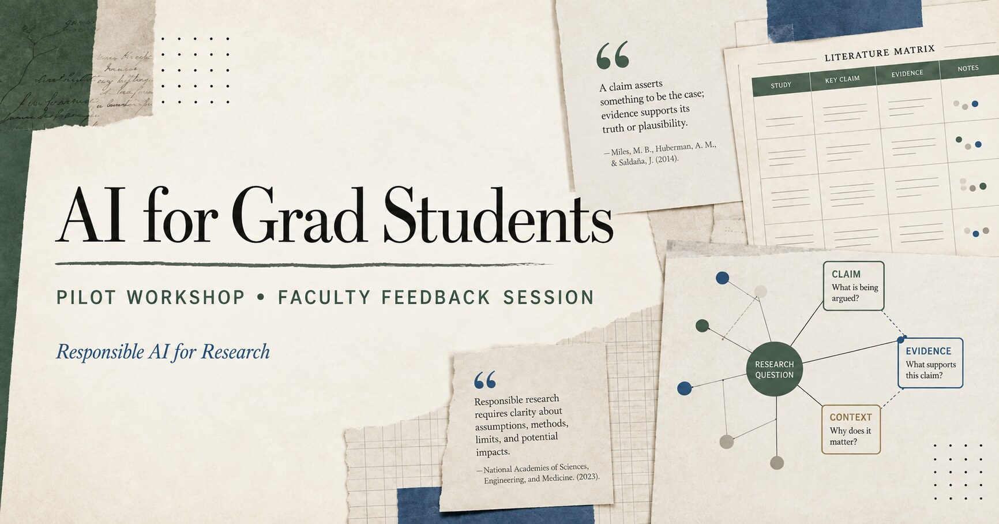

AI for Grad Students: ทดลองคลาสก่อนสอนนิสิตจริง
{kind=link}

ผมกำลังออกแบบ workshop หนึ่งวันชื่อ AI for Grad Students เป็นต้นแบบของกิจกรรมหรือรายวิชาใหม่ ว่าด้วยการใช้ AI ช่วยทำวิจัยอย่างมีวิจารณญาณ รับผิดชอบ และตรวจสอบได้ ไม่ใช่เพียงการเขียน prompt หรือทดลองเครื่องมือ
แทนที่จะนำเนื้อหาไปใช้กับนิสิตทันที ผมอยากชวนอาจารย์ประมาณ 8–12 คนจากหลายสาขามาลองเรียนในบทบาทนิสิตบัณฑิตศึกษา แล้วให้ feedback อย่างตรงไปตรงมา นี่ไม่ใช่เพียงการอบรม แต่เป็นการทดสอบการออกแบบหลักสูตร
Feedback ที่ต้องการต้องนำไปตัดสินใจได้
ผู้เข้าร่วมจะช่วยประเมินว่าเนื้อหายากหรือง่ายเกินไปหรือไม่ ส่วนใดนำไปใช้กับงานวิจัยได้จริง ส่วนใดเสี่ยงต่อ research integrity, citation, privacy หรือ ethics และควรปรับกิจกรรมอย่างไรก่อนนำไปใช้กับนิสิตจริง
การได้ผู้ทดลองจากหลายสาขาสำคัญ เพราะ workflow ที่ดูสมเหตุสมผลในงานคอมพิวเตอร์อาจใช้ไม่ได้กับงานภาคสนาม ข้อมูลสุขภาพ งานที่มีผู้เข้าร่วมวิจัย หรือข้อมูลเชิงพาณิชย์ ความแตกต่างระหว่างสาขาจึงเป็นข้อมูลออกแบบ ไม่ใช่อุปสรรค
เริ่มได้ไม่ว่าจะอยู่ช่วงไหนของการพัฒนาหัวข้อ
ผู้ที่ยังไม่มีหัวข้อจะทดลองใช้ AI สำรวจปัญหาและพัฒนาไปสู่คำถามที่ตรวจสอบได้ ผู้ที่มีหลายหัวข้อจะเปรียบเทียบความสำคัญ ช่องว่าง หลักฐาน ความเป็นไปได้ และความเสี่ยง ส่วนผู้ที่มีหัวข้อแล้วสามารถนำมาใช้ในกิจกรรมโดยตัดข้อมูลลับหรือข้อมูลอ่อนไหวออกก่อน
ผู้ที่ไม่ต้องการใช้หัวข้อของตนเองจะมีโจทย์ตัวอย่างให้ วิธีนี้ทำให้ทุกคนฝึก workflow เดียวกันได้โดยไม่บังคับให้แลกความเป็นส่วนตัวกับการเรียนรู้
Workflow หนึ่งวันต้องเดินผ่านหลักฐานจริง
กิจกรรมครอบคลุมการใช้ AI ช่วยอ่าน paper และจัดระเบียบหลักฐาน ตรวจว่า claim ใดมี evidence รองรับ สำรวจและพัฒนาหัวข้อวิจัย critique methodology และ research design ตลอดจนปรับงานเขียนโดยไม่ให้ข้อสรุปหลุดจากหลักฐาน
อีกส่วนสำคัญคือการตรวจ citation, hallucination และข้อความที่ฟังดูดีแต่อาจไม่จริง รวมถึงการแยกว่าข้อมูลประเภทใดนำเข้า AI ได้ ข้อมูลใดต้องทำให้ไม่ระบุตัวตน และข้อมูลใดไม่ควรนำเข้าสู่บริการภายนอกเลย
เครื่องมือช่วยทำงาน แต่แหล่งจริงเป็นผู้ตัดสิน
ทุกกิจกรรมต้องย้อนกลับไปตรวจแหล่งข้อมูลจริง Prompt template มีไว้ช่วยเริ่มกระบวนการ ไม่ใช่รับรองความถูกต้อง Checklist มีไว้ลดโอกาสพลาด ไม่ใช่แทนวิจารณญาณของนักวิจัย
ผู้เข้าร่วมจึงควรได้ทั้ง workflow และนิสัยการทำงาน: แยกข้อเสนอของ AI ออกจากหลักฐาน บันทึกที่มา ตรวจความสอดคล้องของ claim และ citation เปิดเผยการใช้ AI ตามกติกาที่เกี่ยวข้อง และรับผิดชอบต่อผลลัพธ์สุดท้ายด้วยตนเอง
ออกแบบ hands-on โดยไม่ทำให้ paid account เป็นเงื่อนไขกีดกัน
Workshop เหมาะกับผู้ที่มี AI account ใช้งานอยู่แล้ว เพราะบางกิจกรรมต้องใช้บริบทและความสามารถของเครื่องมือค่อนข้างมาก ผู้ที่ไม่มี paid account ยังสามารถเข้าร่วม ทดลองส่วนที่ทำได้ และให้ feedback ได้ แต่ต้องบันทึกด้วยว่าข้อจำกัดด้านสิทธิใช้ส่งผลต่อประสบการณ์อย่างไร
ข้อมูลนี้สำคัญต่อการออกแบบรายวิชาจริง เพราะหลักสูตรไม่ควรสมมติว่านิสิตทุกคนมีบัญชีแบบชำระเงินเท่ากัน หากกิจกรรมหลักขึ้นกับเครื่องมือเฉพาะ มหาวิทยาลัยต้องตอบเรื่องการเข้าถึง ต้นทุน และทางเลือกทดแทนให้ได้
Pilot ที่ดีต้องยอมให้ต้นแบบถูกวิจารณ์
Workshop ไม่มีค่าใช้จ่าย ใช้ห้องในภาควิชาหรือแล็บ และรับประทานอาหารกลางวันร่วมกันแบบง่าย ๆ เป้าหมายคือทดลองเนื้อหาและแลกเปลี่ยนอย่างตรงไปตรงมา ไม่ใช่ทำกิจกรรมให้ดูเสร็จสมบูรณ์ตั้งแต่ครั้งแรก
ความสำเร็จของ pilot จึงไม่ได้อยู่ที่ผู้เข้าร่วมพอใจทุกส่วน แต่อยู่ที่เราเห็นได้ชัดขึ้นว่าอะไรควรเก็บ อะไรควรตัด อะไรต้องมี guardrail และอะไรยังไม่พร้อมสำหรับนิสิตจริง
พัฒนาการต่อมา จาก workshop หนึ่งวัน สู่สามวิชา AI for Research Build-up · Reviews · Publication ภายใต้หลัก Human-Verified Evidence